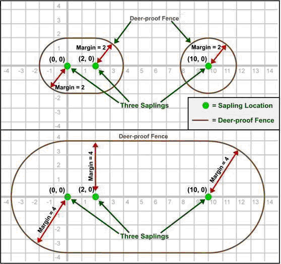

2009 ICPC World Finals · Problem F
Uncle Magnus has planted some young saplings on his farm as part of his reforestation project. Unfortunately, deer like to eat tender sapling shoots and leaves, making it necessary to build protective fences around them. Since deer and other sapling nibblers can reach partway over the fence, every fence must lie at least a minimum distance (a margin) from each sapling.
Deer-proof fencing is quite expensive, so Uncle Magnus wants to minimize the total length of fencing used. Your job is to write a program that computes the minimum length of fencing that is required to enclose and protect the saplings. Fences may include both straight and curved segments. You may design a single fence that encloses all saplings or multiple fences that enclose separate groups of saplings.
Figure 6 shows two example configurations, each consisting of three saplings with different margin requirements. In the top configuration, which corresponds to the first sample input, the minimum-length solution consists of two separate fences. In the bottom configuration, which corresponds to the second sample input, the minimum-length solution consists of a single fence.

The input consists of multiple test cases. The first line of each test case contains integers N (0 < N ≤ 9), which is the number of saplings, and M (0 < M ≤ 200), which is the margin required around each sapling. This line is followed by N additional lines. Each of these N lines contains two integers x and y that describe the Cartesian coordinates of a sapling (|x| ≤ 100 and |y| ≤ 100). No two saplings are in the same location. For simplicity the saplings can all be considered as points and the thickness of deer-proof fences can be considered zero.
The last test case is followed by a line containing two zeros.
For each test case, print the case number (starting with 1) followed by the minimum total length of fencing required to protect the saplings with the given margin. Print the length with two digits to the right of the decimal point. Follow the format of the sample output.
3 2 0 0 2 0 10 0 3 4 0 0 2 0 10 0 0 0
Case 1: length = 29.13 Case 2: length = 45.13